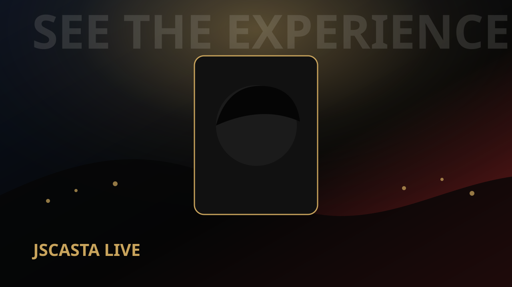
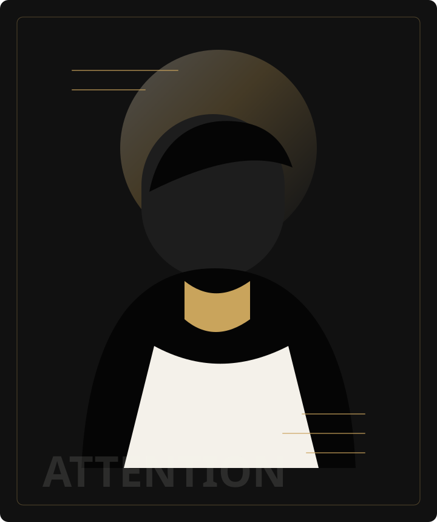

Arrival and room read
JSCASTA checks the event flow, guest energy, layout, and any moments that should be supported or avoided.
Corporate magician for hire in Sydney
Interactive strolling magic that creates energy, starts conversations, and gives guests a shared experience to remember.
Based in Sydney and available across New South Wales. Interstate and international engagements are available by arrangement.

Designed for arrivals, networking, cocktail periods, and transitions.
What strolling magic adds
During arrivals, networking, cocktails, and transitions, JSCASTA moves through the event creating short, interactive moments for small groups. Guests gather, laugh, react, and leave with something natural to talk about.
Strolling magic fits naturally into the event schedule and helps the room feel warmer, more engaging, and more memorable without requiring a stage, complex production, or a captive seated audience.
Inquiry
Share the basic details and JSCASTA will personally review your event and respond with the best next step.
How strolling magic works
JSCASTA checks the event flow, guest energy, layout, and any moments that should be supported or avoided.
He moves through the room performing short pieces for groups, keeping the tone warm, intelligent, and respectful.
Guests leave each moment with something memorable to discuss, which helps networking feel less forced.
Best-fit events
The offer is intentionally focused: interactive strolling magic for professional events where atmosphere, connection, and pacing matter.
Why organizers book it
Useful during arrivals, cocktail hours, transitions, and networking blocks.
No stage, lighting plot, or full-room reset required for the core experience.
Interactive and playful without embarrassing guests or derailing the event.
Guests keep discussing the moments after the performance moves on.
Credibility
More than 17 years of performance experience means JSCASTA knows how to read a room, work with different audiences, and stay composed when live events change unexpectedly.
Ways it can fit your event
These options are a practical starting point. JSCASTA will recommend the most suitable format after personally reviewing your event.
A defined period of strolling magic for smaller events, arrivals, cocktail periods, or short networking windows.
More time to reach guests across larger receptions, conferences, awards nights, and events where interaction is a central goal.
For longer events, multiple performance periods, featured moments, brand integration, travel, or schedules requiring additional planning.
You do not need to choose a format before inquiring. No prices or package selection are required on the inquiry form.

About JSCASTA
JSCASTA combines close-up magic, psychology, humour, curiosity, and storytelling to create impossible moments that feel personal without putting guests on the spot.
FAQ
The current corporate strolling-magic offer is usually 60 to 90 minutes.
No. The core strolling format is designed to move through the room with minimal technical setup.
Cocktail receptions, networking events, conferences, awards nights, client functions, and company celebrations.
JSCASTA reviews the event details and follows up personally with the best next step.